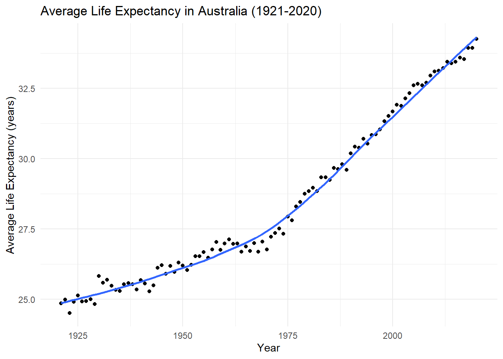
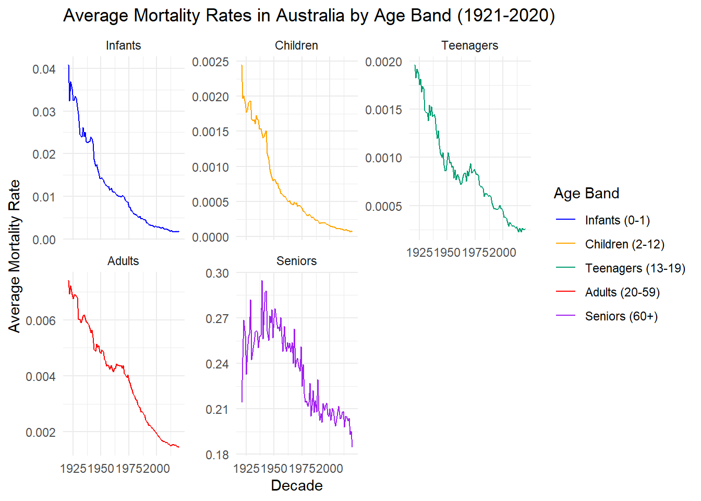
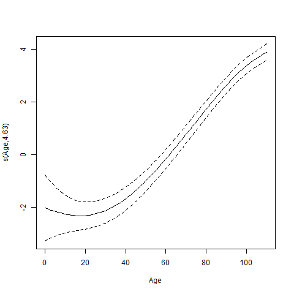

Mapping Mortality: Trends and Patterns in Australian Life Expectancy
Introduction
This analysis delves into a comprehensive dataset sourced from the Human Mortality Database, spanning a wide period from 1921 to 2020. The dataset covers vital metrics, including central death rates, probabilities of death, life expectancies, and population demographics for various age groups in Australia. Detailed descriptions of these variables can be found here.
Our objective is to understand the nuanced patterns of mortality trends in Australia over the past century. With this dataset, we seek to discern fluctuations and shifts in mortality rates across different age bands, ranging from infants to seniors. Additionally, we aim to investigate whether age serves as a significant predictor of mortality, allowing us to further explore potential relationships between age and mortality rates.
To achieve this, we present two insightful visualizations: a scatterplot illustrating the evolution of average life expectancy in Australia and a series of line graphs delineating average mortality rates across different age groups over time.
Analysis
Figure 1 below illustrates the average life expectancy in Australia from 1921 to 2020. It reveals a generally increasing trend in life expectancy over the years, indicating improvements in overall health and quality of life. While the trend is not entirely linear, with fluctuations observed, there is a noticeable steepening in the increase during the later years, suggesting an almost exponential growth.
A notable observation is a period of stagnation in life expectancy during the late 1960s to early 1970s, where the trend appears to dip slightly and level off before resuming its upward trajectory. This stagnation may be attributed to various factors such as changes in healthcare practices, advancements in medical technology, or shifts in societal and lifestyle factors.
Overall, the plot highlights the positive trend of increasing life expectancy in Australia over the past century, reflecting advancements in healthcare and improvements in living conditions.
Meanwhile, in Figure 2, all age groups exhibit a general downward trend in average mortality rates over the years, indicating overall improvements in healthcare, living conditions, and societal factors contributing to longevity. The high average mortality rates initially observed in the early years across all age groups may be attributed to various historical factors such as wars and conflicts, limited access to healthcare, infectious diseases, and socio-economic disparities prevalent during those times.
However, disparities exist among the different age groups. Seniors, defined as individuals aged 60 and above, consistently exhibit the highest average mortality rates throughout the years. Notably, there was a sharp peak in average mortality rates during the 1940s for seniors, likely influenced by significant historical events such as World War II and associated socio-economic disruptions. Additionally, while other age bands began to show falling average mortality rates earlier, seniors’ mortality rates only started declining after 1950. This delayed decline suggests that interventions targeting age-related health issues and mortality risks for seniors may have been slower to implement or less effective during this period, highlighting potential gaps in healthcare access or quality for older populations. Moreover, the significantly larger and irregular variations in mortality rates among seniors over time underscore the complex and multifaceted nature of aging-related health challenges, indicating the need for tailored healthcare strategies and policies to address the evolving needs of older adults.
Interestingly, teenagers and adults experienced a noticeable uplift in average mortality rates around the late 1960s to early 1970s, which could be attributed to Australia’s involvement during the Vietnam War from 1962 to 1973. In contrast, infants and children demonstrate the longest gradual decline in mortality rates over the years. Children and teenagers also exhibit the lowest average mortality rates overall, based on the scales used in the visualization. This observation potentially underscores advancements in pediatric healthcare, nutrition, and public health interventions aimed at reducing child mortality.

To investigate the relationship between age and mortality rate in Australia from 1921 to 2020, we utilized a Generalized Additive Model (GAM) with a Poisson family and a log link function. GAMs are particularly well-suited for capturing complex, potentially non-linear relationships, making them an appropriate choice for modeling mortality rates, which often exhibit intricate age patterns and non-linearities over time.
The GAM model results align with observations from the previous plots, particularly Figure 2. For instance, the smooth term for age s(Age) in the GAM model captures the non-linear relationship between age and mortality rates, which mirrors the varying mortality trends observed across different age groups in Figure 2. Its extremely small p-value (< 2e-16) underscores the statistical significance of age as a predictor of mortality rates, supporting the observed disparities among age groups in mortality rates, with seniors consistently exhibiting the highest average mortality rates relative to other age groups.
Additionally, the estimated degrees of freedom for the smooth term (4.63) indicate the flexibility of the model in capturing the complex relationship between age and mortality rates. This demonstrates how the model effectively accounts for the nuanced patterns observed in Figure 2, including the distinct trends among various age groups and the delayed decline in mortality rates for seniors over time. Moreover, the irregular variations in mortality rates among seniors emphasize the dynamic nature of aging-related health challenges. By capturing these irregularities, the GAM model provides valuable insights into the multifaceted nature of human mortality trends.
In terms of model strength, the adjusted R-squared value of 0.985 indicates that approximately 98.5% of the variance in mortality rates is explained by the model, suggesting that the model fits the data very well. The deviance explained value of 98.4% further supports the goodness of fit of the model, indicating that the GAM model accounts for a large proportion of the variability in mortality rates.
In summary, the GAM model results complement the insights derived from the plots, providing quantitative evidence and underscoring the importance of considering age as a non-linear predictor of mortality rates. Based on the significance of the smooth term for age, as well as the high explanatory power of the model, we can conclude that age significantly influences mortality rates, and the GAM model provides a good fit to the data. This provides a better understanding of how age influences mortality risk, facilitating informed public health interventions and policy decisions aimed at improving population health and longevity.
Family: poisson
Link function: log
Formula:
mx ~ s(Age)
Parametric coefficients:
Estimate Std. Error z value Pr(>|z|)
(Intercept) -4.164 0.145 -28.72 <2e-16 ***
---
Signif. codes: 0 '***' 0.001 '**' 0.01 '*' 0.05 '.' 0.1 ' ' 1
Approximate significance of smooth terms:
edf Ref.df Chi.sq p-value
s(Age) 4.63 5.507 1113 <2e-16 ***
---
Signif. codes: 0 '***' 0.001 '**' 0.01 '*' 0.05 '.' 0.1 ' ' 1
R-sq.(adj) = 0.985 Deviance explained = 98.4%
UBRE = -0.9948 Scale est. = 1 n = 11100Looking at the figure below, the plotted smooth term for age in the GAM model illustrates a noteworthy pattern: initially, the dotted lines display wider dispersion at younger ages, gradually narrowing as age increases. This trend suggests that the model’s confidence in mortality rate predictions strengthens with advancing age. The solid and dotted lines, almost resembling an exponential growth, depict mortality rates rising at an accelerating pace with age, a characteristic that was also observed in our human mortality data. Overall, this indicates the GAM’s efficacy in capturing the intricate relationship between age and mortality rates, showcasing how mortality trends evolve across different age groups with increasing precision as age advances.

Conclusion
In conclusion, our analysis of mortality trends in Australia from 1921 to 2020 reveals compelling insights into the complex dynamics of aging-related health challenges. Through detailed visualizations and the application of a Generalized Additive Model (GAM), we elucidated the significant role of age as a predictor of mortality rates. The GAM model effectively captured the non-linear relationship between age and mortality rates, mirroring the observed disparities among age groups in mortality trends. Furthermore, the model’s flexibility and high explanatory power underscore its efficacy in capturing the multifaceted nature of human mortality trends. Overall, our findings emphasize the importance of considering age as a key factor in understanding mortality risk and highlight the need for tailored healthcare strategies to address the evolving needs of different age demographics.